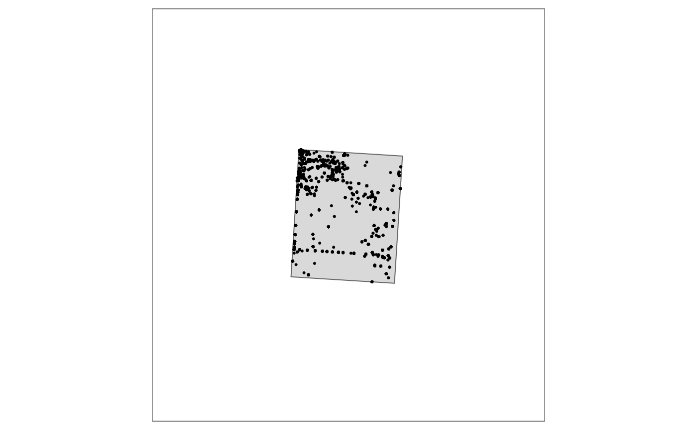

The full process
Department for Environment and Water
Nigel Willoughby
Thursday, 23 February, 2023
Source:vignettes/020_clean.Rmd
020_clean.Rmd
pacs <- c("knitr"
, "envClean"
, "envReport"
, "envFunc", "fs", "purrr"
, "dplyr", "sf", "tibble"
, "tmap", "raster", "rstanarm"
)
purrr::walk(pacs
, ~suppressPackageStartupMessages(library(.
, character.only = TRUE
, quietly = TRUE)
)
)
# Load data
flor_all <- tibble::as_tibble(envClean::flor_all)
# What crs to use for maps?
use_crs <- 3577 # actually an epsg code. see epsg.io
# set area of interest coordinate reference system
aoi <- envClean::aoi %>%
sf::st_transform(crs = use_crs)
Data
Here, we’ll start with combined floristic data (called flor_all) from the mallee in South Australia. This data set is provided with envClean and is a small subset of a GBIF occurrence download (GBIF.Org 2022).
Area of interest
Usually this is a geographic and/or taxonomic area of interest. An example area overlapping flor_all is provided in aoi. Converting flor_all to sf allows plotting them together.
# Create simple feature from flor_all
flor_all_sf <- flor_all %>%
sf::st_as_sf(coords = c("long", "lat")
, crs = 4326
)
# Plot flor_all along with aoi
tm_shape(aoi
, bbox = st_bbox(flor_all_sf)
) +
tm_polygons() +
tm_shape(flor_all_sf) +
tm_dots()
Filtering flor_all to aoi is done with filter_aoi.
# Filter area of interest
flor_aoi <- filter_aoi(flor_all
, use_aoi = aoi
, crs_aoi = st_crs(aoi)
) %>%
add_time_stamp()
# Have a look at results
flor_aoi
#> # A tibble: 1,419 x 9
#> lat long data_name site date original_name rel_metres month year
#> <dbl> <dbl> <fct> <chr> <date> <chr> <dbl> <dbl> <dbl>
#> 1 -34.5 140. GBIF 25739~ 2020-02-22 Eremophila gl~ 500 2 2020
#> 2 -34.5 140. GBIF 39027~ 2022-08-14 Triodia scari~ NA 8 2022
#> 3 -34.5 140. GBIF 39023~ 2022-08-14 Beyeria leche~ NA 8 2022
#> 4 -34.5 140. GBIF 39020~ 2022-08-14 Walsholaria m~ NA 8 2022
#> 5 -34.5 140. GBIF 30588~ 2019-09-01 Triodia scari~ 564 9 2019
#> 6 -34.5 140. GBIF 30587~ 2019-09-01 Westringia ri~ 564 9 2019
#> 7 -34.5 140. GBIF 39021~ 2022-08-14 Phebalium bul~ NA 8 2022
#> 8 -34.5 140. GBIF 39026~ 2022-08-14 Acacia rigens NA 8 2022
#> 9 -34.5 140. GBIF 39020~ 2022-08-14 Exocarpos aph~ NA 8 2022
#> 10 -34.5 140. GBIF 39233~ 2022-08-14 Maireana radi~ NA 8 2022
#> # ... with 1,409 more rowsCheck that spatial filter worked.
# Create sf from flor_aoi
aoi_sf <- flor_aoi %>%
sf::st_as_sf(coords = c("long", "lat")
, crs = 4326
)
# Plot flor_aoi along with aoi (using the same extent/bbox as the previous plot)
tm_shape(aoi
, bbox = st_bbox(flor_all_sf)
) +
tm_polygons() +
tm_shape(aoi_sf) +
tm_dots()
Context: scales of interest
The original location columns probably suggest metre accuracy, or even sub-metre. There may also be a field dampening expectations of such accuracy with estimates of precision for the location. In the following workflow, a precision threshold is set and then an accuracy threshold is adopted. All records with worse precision than threshold are removed, and then all records within the accuracy threshold are lumped. The lumping is done via a raster placed over the aoi.
The original time scale probably suggests accuracy to day, or perhaps even hour, or sub-hour. Choose a scale of relevance to your question. In the example below month is used. Thus all data recorded within a spatial location within a month are treated as one ‘visit’. A ‘taxa’ within a ‘visit’ is considered a ‘record’.
Precision
Records with precision less than threshold are filtered using filter_spat_rel. This takes a dataframe (df) as its first argument, in this case flor_aoi. dist_col specifies the column in df that contains the precision estimates. dist provides the threshold above which to filter. If there are data sources (or any other columns in df) that do not include an estimate of spatial precision, but you would like to keep, this can be done with the argument over_ride. This takes a named list, where names need to match the columns in df. Any levels within the columns provided in over_ride will not be filtered, irrespective of the values in dist_col.
context <- c("year", "month", "lat", "long", "cell")
include_data_name <- c("ALIS","BCM","NVB","TERN")
flor_rel <- filter_spat_rel(flor_aoi
, dist_col = "rel_metres"
, dist = 100
, context = context
, over_ride = list(data_name = include_data_name)
) %>%
add_time_stamp()
# Have a look at results
flor_rel
#> # A tibble: 696 x 9
#> lat long data_name site date original_name rel_metres month year
#> <dbl> <dbl> <fct> <chr> <date> <chr> <dbl> <dbl> <dbl>
#> 1 -34.6 140. GBIF 10854~ 2006-10-20 Enchylaena to~ 50 10 2006
#> 2 -34.6 140. GBIF 10853~ 1990-06-07 Walsholaria m~ 100 6 1990
#> 3 -34.6 140. GBIF 10854~ 2006-10-20 Walsholaria m~ 50 10 2006
#> 4 -34.6 140. GBIF 10853~ 1990-06-07 Roepera apicu~ 100 6 1990
#> 5 -34.6 140. GBIF 10853~ 1990-06-07 Sclerolaena d~ 100 6 1990
#> 6 -34.6 140. GBIF 10854~ 2006-10-20 Eucalyptus gr~ 50 10 2006
#> 7 -34.6 140. GBIF 10853~ 1990-06-07 Eucalyptus gr~ 100 6 1990
#> 8 -34.6 140. GBIF 10854~ 2006-10-20 Maireana erio~ 50 10 2006
#> 9 -34.6 140. GBIF 10853~ 1990-06-07 Dodonaea sten~ 100 6 1990
#> 10 -34.6 140. GBIF 10853~ 1990-06-07 Eucalyptus ol~ 100 6 1990
#> # ... with 686 more rowsRasterize
Now that records with dubious spatial precision have been removed, an accuracy threshold is adpoted by rasterizing remaining records into the cells of aoi_raster, created here.
aoi_raster <- terra::rast(ext = round(terra::ext(aoi), -3)
, resolution = 30
, crs = paste0("epsg:",use_crs)
)
aoi_raster
#> class : SpatRaster
#> dimensions : 367, 300, 1 (nrow, ncol, nlyr)
#> resolution : 30, 30 (x, y)
#> extent : 723000, 732000, -3800000, -3788990 (xmin, xmax, ymin, ymax)
#> coord. ref. : GDA94 / Australian Albers (EPSG:3577)Rasterizing the current data is then done via add_raster_cell. This function has the argument add_xy which will add the centroid of the cell back to the data frame using the same names as the original x and y columns. Alternatively, the x and y columns will be lost from the returned data frame, replaced with cell, the raster cell id.
flor_cell <- envRaster::add_raster_cell(aoi_raster
, flor_rel
, add_xy = TRUE
, crs_df = 4283
) %>%
add_time_stamp()
# Have a look at results
flor_cell
#> # A tibble: 696 x 10
#> cell long lat data_name site date original_name rel_metres month
#> <int> <dbl> <dbl> <fct> <chr> <date> <chr> <dbl> <dbl>
#> 1 7340 140. -34.5 GBIF 10854~ 2006-10-18 Maireana radi~ 50 10
#> 2 7340 140. -34.5 GBIF 10854~ 2006-10-18 Roepera glauca 50 10
#> 3 7340 140. -34.5 GBIF 10854~ 2006-10-18 Beyeria leche~ 50 10
#> 4 7340 140. -34.5 GBIF 10854~ 2006-10-18 Melaleuca lan~ 50 10
#> 5 7340 140. -34.5 GBIF 10854~ 2006-10-18 Sclerolaena p~ 50 10
#> 6 7340 140. -34.5 GBIF 10854~ 2006-10-18 Maireana erio~ 50 10
#> 7 7340 140. -34.5 GBIF 10854~ 2006-10-18 Eucalyptus ol~ 50 10
#> 8 7340 140. -34.5 GBIF 10854~ 2006-10-18 Westringia ri~ 50 10
#> 9 7340 140. -34.5 GBIF 10854~ 2006-10-18 Maireana pent~ 50 10
#> 10 7340 140. -34.5 GBIF 10854~ 2006-10-18 Walsholaria m~ 50 10
#> # ... with 686 more rows, and 1 more variable: year <dbl>Taxonomy
Make taxonomy
Historically, reconciling taxonomy has been by far the most time-consuming, and necessarily expert-driven part of cleaning biological data from any unstructured data set(s). In the past it was often necessary to get an expert botanist to generate an analysis specific taxonomy, taking into account such things as the area of interest, timing (e.g. decade (was it a wet decade), season (was the timing right for orchids or not?)) of the of the main previous surveys, and even possibly the expertise-at-survey-time of the observers. Nothing will replace the quality of the results from such a process. Using online taxonomic tools such as the GBIF taxonomy backbone provides an automated alternative that comes with an unquantified (but unlikely to be negligible) penalty in quality. However, the enormous benefit in flexibility and time provided by automated tools makes them essential in practice.
Reconciling taxonomy can be done with the make_taxa_taxonomy function. This returns a list with two objects:
-
lutaxa.This is a simple lookup from the original name provided to the taxa to use in place of that name. Thus,taxais likely to be duplicated -
taxa_taxonomyprovides the full taxonomic hierarchy for eachtaxain thelutaxaobject. The columntaxashould not have any duplicates. The output can also include lifespan and indigenous status columns, if they are available from any of the original data sources and they are provided tomake_taxa_taxonomy.
taxa <- make_taxa_taxonomy(flor_cell
, out_file = "inst/luGBIF.rds"
)A look at lutaxa.
taxa$lutaxa
#> # A tibble: 579 x 4
#> taxa searched_name original_name rank
#> <chr> <chr> <chr> <ord>
#> 1 Plantae Zosterops lateralis Zosterops lateralis kingdom
#> 2 Walsholaria muelleri Walsholaria muelleri Walsholaria muelleri species
#> 3 Walsholaria magniflora Walsholaria magniflora Walsholaria magniflora species
#> 4 Vittadinia dissecta Vittadinia dissecta Vittadinia dissecta species
#> 5 Vittadinia cuneata Vittadinia cuneata Vittadinia cuneata species
#> 6 Plantae Varanus gouldii Varanus gouldii kingdom
#> 7 Plantae Tyto javanica Tyto javanica kingdom
#> 8 Plantae Todiramphus sanctus Todiramphus sanctus kingdom
#> 9 Plantae Tiliqua rugosa Tiliqua rugosa kingdom
#> 10 Plantae Tachyglossus aculeatus Tachyglossus aculeatus kingdom
#> # ... with 569 more rowsand taxa_taxonomy
taxa$taxa_taxonomy
#> # A tibble: 197 x 8
#> taxa kingdom phylum order family genus species class
#> <chr> <chr> <chr> <chr> <chr> <chr> <chr> <chr>
#> 1 Plantae Plantae <NA> <NA> <NA> <NA> <NA> <NA>
#> 2 Walsholaria muelleri Plantae Trache~ Aster~ Astera~ Walsh~ Walshol~ Magn~
#> 3 Walsholaria magniflora Plantae Trache~ Aster~ Astera~ Walsh~ Walshol~ Magn~
#> 4 Vittadinia dissecta Plantae Trache~ Aster~ Astera~ Vitta~ Vittadi~ Magn~
#> 5 Vittadinia cuneata Plantae Trache~ Aster~ Astera~ Vitta~ Vittadi~ Magn~
#> 6 Senna artemisioides Plantae Trache~ Fabal~ Fabace~ Senna Senna a~ Magn~
#> 7 Senecio pinnatifolius Plantae Trache~ Aster~ Astera~ Senec~ Senecio~ Magn~
#> 8 Sabulina mediterranea Plantae Trache~ Caryo~ Caryop~ Sabul~ Sabulin~ Magn~
#> 9 Rytidosperma caespitosum Plantae Trache~ Poales Poaceae Rytid~ Rytidos~ Lili~
#> 10 Rumicastrum eremaeum Plantae Trache~ Caryo~ Montia~ Rumic~ Rumicas~ Magn~
#> # ... with 187 more rowsFilter taxonomy
Cleaning to a single taxonomy is now possible sing lutaxa and taxa_taxonomy.
At this point, the context is also exclusively applied.
Thus the output of applying filter_taxa is to generate a single record for each taxa within each context. An attempt will also be made to provide a single value for any extra_cols but this will fail to provide a unique result if there are values within any of extra_cols that are not equivalent within a taxa and context.
flor_taxa <- filter_taxa(flor_cell
, taxa_col = "original_name"
, context = context
, taxonomy = taxa
) %>%
add_time_stamp()
# Have a look at results
flor_taxa
#> # A tibble: 694 x 6
#> year month lat long cell taxa
#> <dbl> <dbl> <dbl> <dbl> <int> <chr>
#> 1 2006 10 -34.5 140. 7340 Maireana radiata
#> 2 2006 10 -34.6 140. 95018 Maireana radiata
#> 3 2006 10 -34.5 140. 7340 Roepera glauca
#> 4 1990 5 -34.5 140. 18098 Roepera glauca
#> 5 1990 6 -34.6 140. 80157 Roepera glauca
#> 6 2006 10 -34.6 140. 83038 Roepera glauca
#> 7 2006 10 -34.6 140. 84812 Roepera glauca
#> 8 2006 10 -34.5 140. 7340 Beyeria lechenaultii
#> 9 2006 10 -34.5 140. 14814 Beyeria lechenaultii
#> 10 1990 5 -34.5 140. 18417 Beyeria lechenaultii
#> # ... with 684 more rowsSingletons
An implicit assumption in collation of data sources is usually that records were a list of taxa collected at a specific spatial location (and date). In many cases this assumption proves incorrect. For example, records may be related to, say, tree health monitoring where no other taxa were concurrently recorded.
Thus, filtering ‘singleton’ sites (a site with only a single taxa was recorded) is often prudent.
This will also inadvertently filter legitimate single taxa lists. For example, some areas of samphire or mangroves may have only a single taxa recorded within a survey site. As always, it depends on the goal of any particular analysis whether this trade-off will be worthwhile.
# Filter singletons
flor_single <- filter_counts(flor_taxa
, context = context
, thresh = 1
) %>%
add_time_stamp()
# Have a look at results
flor_single
#> # A tibble: 692 x 6
#> year month lat long cell taxa
#> <dbl> <dbl> <dbl> <dbl> <int> <chr>
#> 1 2006 10 -34.5 140. 7340 Maireana radiata
#> 2 2006 10 -34.6 140. 95018 Maireana radiata
#> 3 2006 10 -34.5 140. 7340 Roepera glauca
#> 4 1990 5 -34.5 140. 18098 Roepera glauca
#> 5 1990 6 -34.6 140. 80157 Roepera glauca
#> 6 2006 10 -34.6 140. 83038 Roepera glauca
#> 7 2006 10 -34.6 140. 84812 Roepera glauca
#> 8 2006 10 -34.5 140. 7340 Beyeria lechenaultii
#> 9 2006 10 -34.5 140. 14814 Beyeria lechenaultii
#> 10 1990 5 -34.5 140. 18417 Beyeria lechenaultii
#> # ... with 682 more rowsEffort
Aggregated data sets are likely to contain records of taxa at spatial locations collected by almost any method imaginable. The effort any observer(s) put into time and taxonomy at each spatial location is usually unknown.
Given that effort matters when documenting ecology (e.g. Wiens 1989), filtering ‘effort’ is an attempt to remove the most seriously under- and over-sampled contexts.
Examples of low taxa richness contexts that may occur in large, unstructured data sets:
- brief, opportune records
- tree-health monitoring data
Examples of high taxa richness contexts that may occur in large, unstructured data sets:
- an observer wandering widely from the location they recorded, particularly if crossing an ecotone
- several observers working together
- an observer with well above average botanical knowledge
- observations taken over a long time-frame but recorded on a single day
These examples just scratch the surface of the ways in which taxa richness can deviate from that expected from an average effort by an average observer.
Taxa richness can be modelled as a function of any variables of interest, for example:
- nothing. This option might be useful in relatively small areas where the non-biological drivers of biological change are relatively stable
- a continuous variable of interest. Say, annual mean temperature, or, soil ph
- principal components. This option is best suited to analyses accompanied by many variables all of which are drivers, or closely correlated with, biological change
- a categorical variable of interest. Say, IBRA Subregions
Taxa richness can be modelled using a Bayesian generalised linear model using the make_effort_mod function. This implements the rstan_glm function in the rstanarm package (Gabry and Goodrich 2020; Brilleman et al. 2018). The resulting model is used to predict upper and lower bounds for acceptable taxa richness, by choosing acceptable lower and upper percentiles or richness.
# run model
effort_mod <- make_effort_mod(flor_single
, context = context
)
#>
#> SAMPLING FOR MODEL 'count' NOW (CHAIN 1).
#> Chain 1:
#> Chain 1: Gradient evaluation took 0 seconds
#> Chain 1: 1000 transitions using 10 leapfrog steps per transition would take 0 seconds.
#> Chain 1: Adjust your expectations accordingly!
#> Chain 1:
#> Chain 1:
#> Chain 1: Iteration: 1 / 2000 [ 0%] (Warmup)
#> Chain 1: Iteration: 200 / 2000 [ 10%] (Warmup)
#> Chain 1: Iteration: 400 / 2000 [ 20%] (Warmup)
#> Chain 1: Iteration: 600 / 2000 [ 30%] (Warmup)
#> Chain 1: Iteration: 800 / 2000 [ 40%] (Warmup)
#> Chain 1: Iteration: 1000 / 2000 [ 50%] (Warmup)
#> Chain 1: Iteration: 1001 / 2000 [ 50%] (Sampling)
#> Chain 1: Iteration: 1200 / 2000 [ 60%] (Sampling)
#> Chain 1: Iteration: 1400 / 2000 [ 70%] (Sampling)
#> Chain 1: Iteration: 1600 / 2000 [ 80%] (Sampling)
#> Chain 1: Iteration: 1800 / 2000 [ 90%] (Sampling)
#> Chain 1: Iteration: 2000 / 2000 [100%] (Sampling)
#> Chain 1:
#> Chain 1: Elapsed Time: 0.229 seconds (Warm-up)
#> Chain 1: 0.236 seconds (Sampling)
#> Chain 1: 0.465 seconds (Total)
#> Chain 1:
#>
#> SAMPLING FOR MODEL 'count' NOW (CHAIN 2).
#> Chain 2:
#> Chain 2: Gradient evaluation took 0 seconds
#> Chain 2: 1000 transitions using 10 leapfrog steps per transition would take 0 seconds.
#> Chain 2: Adjust your expectations accordingly!
#> Chain 2:
#> Chain 2:
#> Chain 2: Iteration: 1 / 2000 [ 0%] (Warmup)
#> Chain 2: Iteration: 200 / 2000 [ 10%] (Warmup)
#> Chain 2: Iteration: 400 / 2000 [ 20%] (Warmup)
#> Chain 2: Iteration: 600 / 2000 [ 30%] (Warmup)
#> Chain 2: Iteration: 800 / 2000 [ 40%] (Warmup)
#> Chain 2: Iteration: 1000 / 2000 [ 50%] (Warmup)
#> Chain 2: Iteration: 1001 / 2000 [ 50%] (Sampling)
#> Chain 2: Iteration: 1200 / 2000 [ 60%] (Sampling)
#> Chain 2: Iteration: 1400 / 2000 [ 70%] (Sampling)
#> Chain 2: Iteration: 1600 / 2000 [ 80%] (Sampling)
#> Chain 2: Iteration: 1800 / 2000 [ 90%] (Sampling)
#> Chain 2: Iteration: 2000 / 2000 [100%] (Sampling)
#> Chain 2:
#> Chain 2: Elapsed Time: 0.239 seconds (Warm-up)
#> Chain 2: 0.216 seconds (Sampling)
#> Chain 2: 0.455 seconds (Total)
#> Chain 2:
#>
#> SAMPLING FOR MODEL 'count' NOW (CHAIN 3).
#> Chain 3:
#> Chain 3: Gradient evaluation took 0 seconds
#> Chain 3: 1000 transitions using 10 leapfrog steps per transition would take 0 seconds.
#> Chain 3: Adjust your expectations accordingly!
#> Chain 3:
#> Chain 3:
#> Chain 3: Iteration: 1 / 2000 [ 0%] (Warmup)
#> Chain 3: Iteration: 200 / 2000 [ 10%] (Warmup)
#> Chain 3: Iteration: 400 / 2000 [ 20%] (Warmup)
#> Chain 3: Iteration: 600 / 2000 [ 30%] (Warmup)
#> Chain 3: Iteration: 800 / 2000 [ 40%] (Warmup)
#> Chain 3: Iteration: 1000 / 2000 [ 50%] (Warmup)
#> Chain 3: Iteration: 1001 / 2000 [ 50%] (Sampling)
#> Chain 3: Iteration: 1200 / 2000 [ 60%] (Sampling)
#> Chain 3: Iteration: 1400 / 2000 [ 70%] (Sampling)
#> Chain 3: Iteration: 1600 / 2000 [ 80%] (Sampling)
#> Chain 3: Iteration: 1800 / 2000 [ 90%] (Sampling)
#> Chain 3: Iteration: 2000 / 2000 [100%] (Sampling)
#> Chain 3:
#> Chain 3: Elapsed Time: 0.242 seconds (Warm-up)
#> Chain 3: 0.252 seconds (Sampling)
#> Chain 3: 0.494 seconds (Total)
#> Chain 3:
#>
#> SAMPLING FOR MODEL 'count' NOW (CHAIN 4).
#> Chain 4:
#> Chain 4: Gradient evaluation took 0 seconds
#> Chain 4: 1000 transitions using 10 leapfrog steps per transition would take 0 seconds.
#> Chain 4: Adjust your expectations accordingly!
#> Chain 4:
#> Chain 4:
#> Chain 4: Iteration: 1 / 2000 [ 0%] (Warmup)
#> Chain 4: Iteration: 200 / 2000 [ 10%] (Warmup)
#> Chain 4: Iteration: 400 / 2000 [ 20%] (Warmup)
#> Chain 4: Iteration: 600 / 2000 [ 30%] (Warmup)
#> Chain 4: Iteration: 800 / 2000 [ 40%] (Warmup)
#> Chain 4: Iteration: 1000 / 2000 [ 50%] (Warmup)
#> Chain 4: Iteration: 1001 / 2000 [ 50%] (Sampling)
#> Chain 4: Iteration: 1200 / 2000 [ 60%] (Sampling)
#> Chain 4: Iteration: 1400 / 2000 [ 70%] (Sampling)
#> Chain 4: Iteration: 1600 / 2000 [ 80%] (Sampling)
#> Chain 4: Iteration: 1800 / 2000 [ 90%] (Sampling)
#> Chain 4: Iteration: 2000 / 2000 [100%] (Sampling)
#> Chain 4:
#> Chain 4: Elapsed Time: 0.246 seconds (Warm-up)
#> Chain 4: 0.251 seconds (Sampling)
#> Chain 4: 0.497 seconds (Total)
#> Chain 4:
# filter using model results
flor_effort <- flor_single %>%
dplyr::inner_join(effort_mod$mod_cell_result %>%
dplyr::filter(keep)
) %>%
dplyr::select(names(flor_single)) %>%
add_time_stamp()
# Have a look at results
flor_effort
#> # A tibble: 692 x 6
#> year month lat long cell taxa
#> <dbl> <dbl> <dbl> <dbl> <int> <chr>
#> 1 2006 10 -34.5 140. 7340 Maireana radiata
#> 2 2006 10 -34.6 140. 95018 Maireana radiata
#> 3 2006 10 -34.5 140. 7340 Roepera glauca
#> 4 1990 5 -34.5 140. 18098 Roepera glauca
#> 5 1990 6 -34.6 140. 80157 Roepera glauca
#> 6 2006 10 -34.6 140. 83038 Roepera glauca
#> 7 2006 10 -34.6 140. 84812 Roepera glauca
#> 8 2006 10 -34.5 140. 7340 Beyeria lechenaultii
#> 9 2006 10 -34.5 140. 14814 Beyeria lechenaultii
#> 10 1990 5 -34.5 140. 18417 Beyeria lechenaultii
#> # ... with 682 more rowsProportion of sites at which a taxa occurs
When clustering biological data, it is often useful to exclude rare taxa from the data set. filter_prop allows filtering such taxa.
# Filter taxa recorded at less than 5% of contexts
flor_prop <- filter_prop(flor_effort
, context = context
, default_per = 5
) %>%
add_time_stamp()
# Have a look at results
flor_prop
#> # A tibble: 612 x 6
#> year month lat long cell taxa
#> <dbl> <dbl> <dbl> <dbl> <int> <chr>
#> 1 2006 10 -34.5 140. 7340 Roepera glauca
#> 2 1990 5 -34.5 140. 18098 Roepera glauca
#> 3 1990 6 -34.6 140. 80157 Roepera glauca
#> 4 2006 10 -34.6 140. 83038 Roepera glauca
#> 5 2006 10 -34.6 140. 84812 Roepera glauca
#> 6 2006 10 -34.5 140. 7340 Beyeria lechenaultii
#> 7 2006 10 -34.5 140. 14814 Beyeria lechenaultii
#> 8 1990 5 -34.5 140. 18417 Beyeria lechenaultii
#> 9 2006 10 -34.5 140. 19607 Beyeria lechenaultii
#> 10 2006 10 -34.5 140. 22287 Beyeria lechenaultii
#> # ... with 602 more rowsTime
So far, all contexts year, month, lat, long or cell have been kept. It may be desirable to keep only the most recent contexts. Just use dplyr…
flor_recent <- flor_prop %>%
dplyr::group_by(across(any_of(context[!context %in% c("month", "year")]))) %>%
dplyr::filter(year == max(year)
, month == max(month)
) %>%
dplyr::ungroup() %>%
add_time_stamp()
# Have a look at results
flor_recent
#> # A tibble: 541 x 6
#> year month lat long cell taxa
#> <dbl> <dbl> <dbl> <dbl> <int> <chr>
#> 1 2006 10 -34.5 140. 7340 Roepera glauca
#> 2 1990 5 -34.5 140. 18098 Roepera glauca
#> 3 2006 10 -34.6 140. 83038 Roepera glauca
#> 4 2006 10 -34.6 140. 84812 Roepera glauca
#> 5 2006 10 -34.5 140. 7340 Beyeria lechenaultii
#> 6 2006 10 -34.5 140. 14814 Beyeria lechenaultii
#> 7 1990 5 -34.5 140. 18417 Beyeria lechenaultii
#> 8 2006 10 -34.5 140. 19607 Beyeria lechenaultii
#> 9 2006 10 -34.5 140. 22287 Beyeria lechenaultii
#> 10 2006 10 -34.5 140. 37727 Beyeria lechenaultii
#> # ... with 531 more rowsFiltering summary
A little care naming objects enables easily capturing the results of the cleaning process. The function rec_vis_sit_tax summarises the taxa, records, visits and sites in each flor_ data frame.
filt_summary <- ls(pattern = "flor_") %>%
tibble::enframe(name = NULL, value = "name") %>%
dplyr::mutate(obj = map(name,get)
, has_stamp = map_lgl(obj,~"ctime" %in% names(attributes(.)))
) %>%
dplyr::filter(has_stamp) %>%
dplyr::mutate(nrow = map_dbl(obj, nrow)) %>%
dplyr::mutate(ctime = map(obj,attr,"ctime")) %>%
tidyr::unnest(cols = c(ctime)) %>%
dplyr::arrange(desc(nrow),ctime) %>%
dplyr::mutate(summary = map(obj
, rec_vis_sit_tax
, site_cols = c("cell", "lat", "long")
, visit_cols = c("month", "year")
, taxa_cols = c("taxa", "original_name")
)
) %>%
tidyr::unnest(cols = c(summary))
# Have a look at results
filt_summary
#> # A tibble: 8 x 9
#> name obj has_stamp nrow ctime taxa records visits sites
#> <chr> <list> <lgl> <dbl> <dttm> <int> <int> <int> <int>
#> 1 flor_a~ <tibbl~ TRUE 1419 2023-02-23 23:10:57 213 1419 24 141
#> 2 flor_r~ <tibbl~ TRUE 696 2023-02-23 23:10:58 130 696 8 40
#> 3 flor_c~ <tibbl~ TRUE 696 2023-02-23 23:11:02 130 696 8 38
#> 4 flor_t~ <tibbl~ TRUE 694 2023-02-23 23:11:02 129 694 8 38
#> 5 flor_s~ <tibbl~ TRUE 692 2023-02-23 23:11:03 128 692 7 36
#> 6 flor_e~ <tibbl~ TRUE 692 2023-02-23 23:11:06 128 692 7 36
#> 7 flor_p~ <tibbl~ TRUE 612 2023-02-23 23:11:06 71 612 7 36
#> 8 flor_r~ <tibbl~ TRUE 541 2023-02-23 23:11:06 71 541 7 36What happened to x?
It can often be useful to trace the results for a single taxa through the filtering process. How did, say, Eucalyptus incrassata fare through the process?
find_taxa(taxa = "Eucalyptus incrassata"
, lookup_taxa = taxa$lutaxa
)
#> # A tibble: 8 x 6
#> name obj has_stamp nrow ctime summary
#> <chr> <list> <lgl> <dbl> <dttm> <chr>
#> 1 flor_aoi <tibble [1 x 2]> TRUE 1419 2023-02-23 23:10:57 Eucalyptus i~
#> 2 flor_rel <tibble [1 x 2]> TRUE 696 2023-02-23 23:10:58 Eucalyptus i~
#> 3 flor_cell <tibble [1 x 2]> TRUE 696 2023-02-23 23:11:02 Eucalyptus i~
#> 4 flor_taxa <tibble [1 x 2]> TRUE 694 2023-02-23 23:11:02 Eucalyptus i~
#> 5 flor_single <tibble [1 x 2]> TRUE 692 2023-02-23 23:11:03 Eucalyptus i~
#> 6 flor_effort <tibble [1 x 2]> TRUE 692 2023-02-23 23:11:06 Eucalyptus i~
#> 7 flor_prop <tibble [1 x 2]> TRUE 612 2023-02-23 23:11:06 Eucalyptus i~
#> 8 flor_recent <tibble [1 x 2]> TRUE 541 2023-02-23 23:11:06 Eucalyptus i~Summary
After ingesting data from a range of sources (GBIF) the envClean functions helped clean the data ready for further analysis. The original 1419 records were cleaned, tidied and filtered to 541 records.
References
Brilleman, SL, MJ Crowther, M Moreno-Betancur, J Buros Novik, and R Wolfe. 2018. “Joint Longitudinal and Time-to-Event Models via Stan.” https://github.com/stan-dev/stancon_talks/.
Gabry, Jonah, and Ben Goodrich. 2020. Rstanarm: Bayesian Applied Regression Modeling via Stan. https://CRAN.R-project.org/package=rstanarm.
GBIF.Org. 2022. “GBIF Occurrence Download.” The Global Biodiversity Information Facility. https://doi.org/10.15468/DL.ZK34YK.
Wiens, J A. 1989. “Spatial scaling in ecology.” Journal Article. Functional Ecology 3 (4): 385–97.